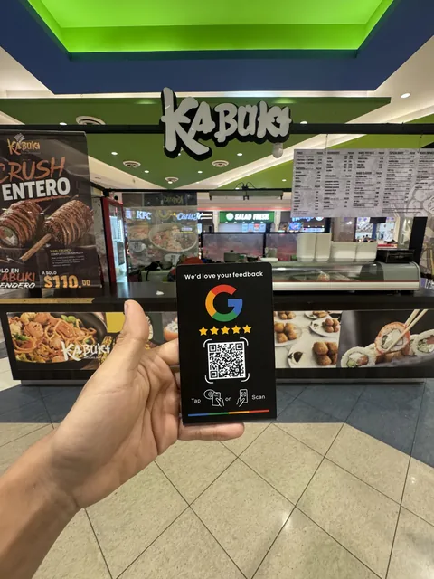
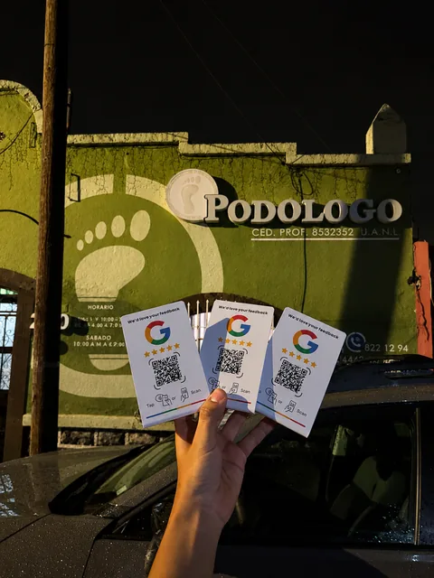
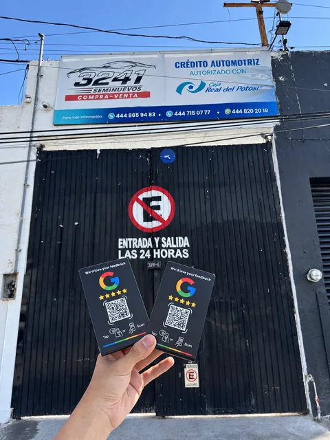

Guía
Código QR para reseñas de Google: cómo generarlo gratis y dónde ponerlo
Publicado el 6 de septiembre de 2026 · S&C Solutions, San Luis Potosí
¿Quieres las reseñas sin pedirlas una por una?
La placa NFC de reseñas: el cliente acerca su celular y se le abren tus estrellas. $399 MXN una pieza más $179 de envío, con tutorial incluido; si es para tu negocio, la configuramos nosotros. Cinco salen a $220 cada una.
Ya trabajan con nosotros negocios de San Luis Potosí como Kabuki Sendero, Centro Podológico Potosino y 3241 Seminuevos. Ver los trabajos con foto →
01Cómo hacerlo, paso a paso
- Consigue el enlace oficial de reseñas de tu ficha (aquí explicamos dónde está).
- Pégalo en un generador de QR. Cualquiera sirve; no hace falta pagar ninguno.
- Descárgalo en buen tamaño. Impreso, el QR necesita al menos 2 cm de lado para leerse rápido a un brazo de distancia.
- Pruébalo con dos celulares distintos antes de imprimirlo en cantidad.
02Dónde sí funciona
- En el recibo o la nota. Cliente contento, teléfono en la mano.
- En la mesa, en restaurantes y cafeterías: el tiempo muerto de la espera es oro.
- En el mostrador de entrega, junto a donde se paga.
03Dónde falla
- Con poca luz —bares, salones de noche— la cámara tarda o no lee.
- Pegado en la pared, lejos y a la altura equivocada: nadie apunta desde dos metros.
- Con las manos ocupadas: quien carga bolsas no va a sacar la cámara.
- Impreso pequeño o brillante: el reflejo lo inutiliza.
04Por qué las placas llevan las dos cosas
El NFC no necesita luz ni apuntar: se acerca el celular y abre. El QR cubre los celulares con NFC apagado. Juntos en la misma placa, nadie se queda fuera. Cómo funciona una placa.
Hecho en negocios reales de San Luis Potosí

Kabuki SenderoPlaza Sendero
Centro Podológico PotosinoCentro
3241 SeminuevosSalvador NavaPlaca de reseñas para Google (NFC + QR)
$399 MXN
Una pieza, más $179 de envío. Desde dos, el envío es gratis: cinco salen en $1,099, o sea $220 cada una.
Ver todas las cantidades y pagarPreguntas frecuentes
¿Cómo hago un código QR para reseñas de Google?
Copia el enlace de reseñas de tu Perfil de Negocio y pégalo en cualquier generador de QR gratuito. Imprímelo de al menos 2 cm de lado y pruébalo con dos celulares antes de reproducirlo.
¿Dónde conviene poner el código QR de reseñas?
Donde el cliente ya está contento y con el teléfono en la mano: el recibo, la mesa o el mostrador de entrega. No en la pared lejos ni en sitios con poca luz.
¿Qué es mejor, QR o NFC para reseñas?
Se complementan. El NFC funciona sin luz y sin apuntar; el QR cubre los celulares con NFC apagado. Una placa con las dos cosas no deja a nadie fuera.
¿El código QR de reseñas es gratis?
Sí. El enlace lo da Google gratis y cualquier generador de QR gratuito lo convierte. Lo que se paga, si se quiere, es la placa física con NFC.
¿Quieres el QR y la placa listos?
Te mandamos el QR de tu ficha y, si lo quieres, la placa con NFC ya configurada para tu mostrador. Respondemos en menos de 24 horas, y si no te conviene te lo decimos.
Escribir por WhatsAppOtras preguntas que respondemos
De dónde salen los datos
- Ayuda oficial de Google: crear un enlace o un código QR para solicitar reseñas — Google recomienda imprimir el enlace como QR en el local y en recibos
- BrightLocal, Local Consumer Review Survey 2026 — 74% sólo mira reseñas de los últimos tres meses
- Factores de posicionamiento local 2026 — las reseñas pesan un 16% del posicionamiento local
Escrito por S&C Solutions, San Luis Potosí, S.L.P.: hacemos páginas web, placas NFC de reseñas, fichas de Google y agentes de WhatsApp con IA para negocios de San Luis Potosí y de todo México. Los precios de esta página los genera nuestra propia tabla, la misma que cobra el sitio, así que no pueden discrepar del importe real. Los casos que mencionamos son instalaciones hechas por nosotros y publicadas con permiso del negocio. ¿Algo no cuadra? hola@sycsolutions.company